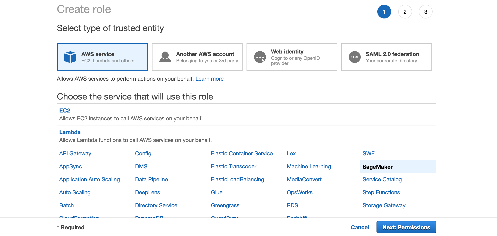
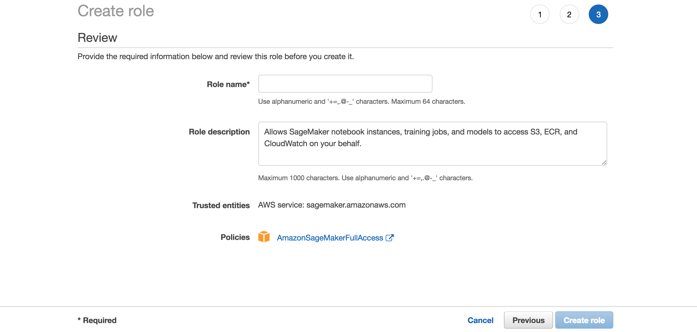
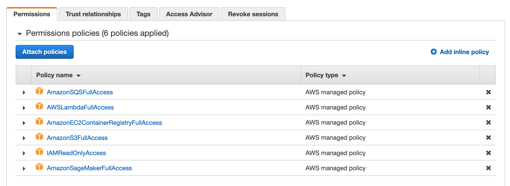

sagify
A command-line utility to train and deploy Machine Learning/Deep Learning models on AWS SageMaker in a few simple steps!

Installation
Prerequisites
sagify requires the following:
Install sagify
At the command line:
pip install sagify
Getting started
Step 1: Clone Deep Learning Calculator repository
You're going to clone and train a Deep Learning codebase to evaluate arithmetic additions on up to 3 digit integers.
Clone repository:
git clone https://github.com/Kenza-AI/deep-learning-addition.git
Optionally, if you want to use Python 2.7 replace the value of REQUIRED_PYTHON and PYTHON_INTERPRETER in test_environment.py and Makefile, respectively, to python2.
Create environment:
make create_environment
Don't forget to activate the virtualenv after the creation of environment by executing workon deep-learning-addition.
Install dependencies:
make requirements
Generate training and validation data:
make data
Step 2: Initialize sagify
sagify init -d src
Type in deep-learning-addition for SageMaker app name and make sure to choose your preferred Python version, AWS profile and region.
A module called sagify is created under src/. The structure is:
sagify/
local_test/
test_dir/
input/
config/
hyperparameters.json
data/
training/
model/
output/
deploy_local.sh
train_local.sh
prediction/
__init__.py
nginx.conf
predict.py
predictor.py
serve
wsgi.py
training/
__init__.py
train
__init__.py
build.sh
config.json
Dockerfile
executor.sh
push.sh
Step 3: Integrate sagify
As a Data Scientist, you only need to conduct a few actions. Sagify takes care of the rest:
- Copy a subset of training data under
sagify/local_test/test_dir/input/data/training/to test that training works locally - Implement
train(...)function insagify/training/train - Implement
predict(...)function insagify/prediction/predict.py - Optionally, specify hyperparameters in
sagify/local_test/test_dir/input/config/hyperparameters.json
Hence,
-
Copy
.npyfiles fromdata/processed/tosagify/local_test/test_dir/input/data/training/ -
Replace the
TODOsin thetry..exceptoftrain(...)function insagify/training/trainfile with:train_model.train(input_path=input_data_path, output_path=model_save_path)and after the
import tracebackat the top of the file, add:from src.models import train_modelThe body of
try..exceptshould look like:try: train_model.train(input_path=input_data_path, output_path=model_save_path) print('Training complete.') except Exception as e: -
Replace the body of
predict(...)function insagify/prediction/predict.pywith:def _format_addition(input_str): def _format(input_str_num, part_one): required_spaces_num = 3 - len(input_str_num) spaces = '' for _ in range(required_spaces_num): spaces += ' ' return spaces + input_str_num if part_one else input_str_num + spaces two_parts = input_str.split('+') formatted_part_one = _format(two_parts[0], True) formatted_part_two = _format(two_parts[1], False) return '{}+{}'.format(formatted_part_one, formatted_part_two) addition_str = _format_addition(json_input['addition']) from src.encoding_utils import decode_prediction, encode_query input_model = encode_query(addition_str) prediction = ModelService.predict(input_model) result = { 'result': decode_prediction(prediction) } return resultand replace the body of
get_model()function inModelServiceclass in the same file with:if cls.model is None: import keras cls.model = keras.models.load_model(os.path.join(_MODEL_PATH, 'model.h5')) return cls.model
Step 4: Build Docker image
It's time to build the Docker image that will contain the Deep Learning Addition codebase:
sagify build -d src -r requirements.txt
The path to requirements.txt is necessary to be specified so that all the required dependencies are installed in Docker image.
If you run docker images | grep deep-learning-addition-img in your terminal, you'll see the created Deep Learning Addition image.
Step 5: Train Deep Learning model
Time to train the Deep Learning model in the newly built Docker image:
sagify local train -d src
This step takes ~5 minutes in a MacBook Pro Early 2015 3.1 GHz Intel Core i7.
Step 6: Deploy Deep Learning model
Finally, serve the model as a REST Service:
sagify local deploy -d src
Run the following curl command on your terminal to verify that the REST Service works:
curl -X POST \
http://localhost:8080/invocations \
-H 'Cache-Control: no-cache' \
-H 'Content-Type: application/json' \
-d '{
"addition": "943+604"
}'
It will be slow in the first couple of calls as it loads the model in a lazy manner.
Voila! That's a proof that this Deep Learning model is going to be trained and deployed on AWS SageMaker successfully. Now, go to the following section to see how to configure your AWS account in order to train and deploy your Deep Learning model on AWS SageMaker using sagify. Don't worry, the configuration is a one time thing that can be done by your Platform team, too.
Usage
Configure AWS Account
- Sign in to the AWS Management Console as an IAM user and open the IAM console at https://console.aws.amazon.com/iam/
- Select
Rolesfrom the list in the left-hand side, and click on Create role - Then, select SageMaker as the image shows:

- Click Next: Review on the following page:

- Type a name for the SageMaker role, and click on Create role:

- Click on the created role:

- Click on Attach policy and search for
AmazonEC2ContainerRegistryFullAccess. Attach the corresponding policy:

- Do the same to attach the
AmazonS3FullAccessandIAMReadOnlyAccesspolicies, and end up with the following:

-
Now, go to Users page by clicking on Users on the left-hand side.
-
Click on your IAM user that you want to use for AWS SageMaker:

- Copy the ARN of that user:

- Then, go back the page of the Role you created and click on the Trust relationships tab:

-
Click on Edit trust relationship and add the following:
{ "Version": "2012-10-17", "Statement": [ { "Sid": "", "Effect": "Allow", "Principal": { "AWS": "PASTE_THE_ARN_YOU_COPIED_EARLIER", "Service": "sagemaker.amazonaws.com" }, "Action": "sts:AssumeRole" } ] } -
You're almost there! Make sure that you have added the IAM user in your
~/.aws/credentialsfile. For example:[test-sagemaker] aws_access_key_id = ... aws_secret_access_key = ... -
And, finally, add the following in the
~/.aws/configfile:[profile test-sagemaker] region = us-east-1 <-- USE YOUR PREFERRED REGION role_arn = COPY_PASTE_THE_ARN_OF_THE_CREATED_ROLE_NOT_USER! for example: arn:aws:iam::...:role/TestSageMakerRole source_profile = test-sagemaker -
That's it! From now on, choose the created AWS profile when initializing sagify.
-
You can change the AWS profile in an already initialized sagify module by changing the value of
aws_profileandprofileinsagify/config.jsonandsagify/push.sh, respectively.
Push Docker Image to AWS ECS
If you have followed all the steps of Getting Started, run sagify push -d src to push the Docker image to AWS ECS. This step may take some time depending on your internet connection upload speed.
Create S3 Bucket
Make sure to create an S3 bucket with a name of your choice, for example: my-dl-addition
Upload Training Data
Execute sagify cloud upload-data -d src -i data/processed/ -s s3://my-dl-addition/training-data to upload training data to S3
Train on AWS SageMaker
Execute sagify cloud train -d src/ -i s3://my-dl-addition/training-data/ -o s3://my-dl-addition/output/ -e ml.m4.xlarge to train the Deep Learning model on SageMaker. This command will use the pushed Docker image.
Copy the displayed Model S3 location after the command is executed (example: s3://my-dl-addition/output/deep-learning-addition-img-2018-04-29-15-04-14-483/output/model.tar.gz)
Deploy on AWS SageMaker
Execute sagify cloud deploy -d src -m s3://my-dl-addition/output/.../output/model.tar.gz -n 3 -e ml.m4.xlarge to deploy the model on SageMaker.
Call SageMaker REST Endpoint
Find the endpoint URL under Endpoints in AWS SageMaker service on AWS console. Please, refer to https://docs.aws.amazon.com/apigateway/latest/developerguide/how-to-use-postman-to-call-api.html on how to call it from Postman as authorization is required.
Remember that it's a POST HTTP request with Content-Type application/json, and the request JSON body is of the form:
{
"addition": "112+143"
}
Commands
Initialize
Name
Initializes a sagify module
Synopsis
sagify init [--dir SRC_DIR]
Description
This command initializes a sagify module in the current working directory or under SRC_DIR, if optional flag --dir is specified.
Optional Flags
--dir SRC_DIR or -d SRC_DIR: Directory to create sagify module
Example
sagify init -d src/
Build
Name
Builds a Docker image
Synopsis
sagify build --requirements-dir REQUIREMENTS_FILE [--dir SRC_DIR]
Description
This command builds a Docker image from code under the current working directory or under SRC_DIR, if optional flag --dir is specified. A REQUIREMENTS_FILE needs to be specified in order to install all required dependencies in Docker image.
Required Flags
--requirements-dir REQUIREMENTS_FILE or -r REQUIREMENTS_FILE: Path to REQUIREMENTS_FILE
Optional Flags
--dir SRC_DIR or -d SRC_DIR: Directory where sagify module resides
Example
sagify build -d src/ -r requirements.txt
Local Train
Name
Executes a Docker image in train mode
Synopsis
sagify local train [--dir SRC_DIR]
Description
This command executes a Docker image in train mode. More specifically, it executes the train(...) function in sagify/training/train inside an already built Docker image (see Build command section).
Optional Flags
--dir SRC_DIR or -d SRC_DIR: Directory where sagify module resides
Example
sagify local train -d src/
Local Deploy
Name
Executes a Docker image in serve mode
Synopsis
sagify local deploy [--dir SRC_DIR]
Description
This command executes a Docker image in serve mode. More specifically, it runs a Flask REST app in Docker image and directs HTTP requests to /invocations endpoint. Then, the /invocations endpoint calls the predict(...) function in sagify/prediction/predict.py (see Build command section on how to build a Docker image).
Optional Flags
--dir SRC_DIR or -d SRC_DIR: Directory where sagify module resides
Example
sagify local deploy -d src/
Push
Name
Pushes a Docker image to AWS Elastic Container Service
Synopsis
sagify push [--dir SRC_DIR] [--aws-profile PROFILE_NAME] [--aws-region AWS_REGION] [--iam-role-arn IAM_ROLE] [--external-id EXTERNAL_ID]
Description
This command pushes an already built Docker image to AWS Elastic Container Service. Later on, AWS SageMaker will consume that image from AWS Elastic Container Service for train and serve mode.
Only one of iam-role-arn and aws_profile can be provided. external-id is ignored when no iam-role-arn is provided.
Optional Flags
--dir SRC_DIR or -d SRC_DIR: Directory where sagify module resides
--iam-role-arn IAM_ROLE or -i IAM_ROLE: AWS IAM role to use for pushing to ECR
--aws-region AWS_REGION or -r AWS_REGION: The AWS region to push the image to
--aws-profile PROFILE_NAME or -p PROFILE_NAME: AWS profile to use for pushing to ECR
--external-id EXTERNAL_ID or -e EXTERNAL_ID: Optional external id used when using an IAM role
Example
sagify push -d src/
Cloud Upload Data
Name
Uploads data to AWS S3
Synopsis
sagify cloud upload-data --input-dir LOCAL_INPUT_DATA_DIR --s3-dir S3_TARGET_DATA_LOCATION [--dir SRC_DIR]
Description
This command uploads content under LOCAL_INPUT_DATA_DIR to S3 under S3_TARGET_DATA_LOCATION
Required Flags
--input-dir LOCAL_INPUT_DATA_DIR or -i LOCAL_INPUT_DATA_DIR: Local input directory
--s3-dir S3_TARGET_DATA_LOCATION or -s S3_TARGET_DATA_LOCATION: S3 target location
Optional Flags
--dir SRC_DIR or -d SRC_DIR: Directory where sagify module resides
Example
sagify cloud upload-data -d src/ -i ./training_data/ -s s3://my-bucket/training-data/
Cloud Train
Name
Executes a Docker image in train mode on AWS SageMaker
Synopsis
sagify cloud train --input-s3-dir INPUT_DATA_S3_LOCATION --output-s3-dir S3_LOCATION_TO_SAVE_OUTPUT --ec2-type EC2_TYPE [--dir SRC_DIR] [--hyperparams-file HYPERPARAMS_JSON_FILE] [--volume-size EBS_SIZE_IN_GB] [--time-out TIME_OUT_IN_SECS] [--aws-tags TAGS] [--iam-role-arn IAM_ROLE] [--external-id EXTERNAL_ID] [--base-job-name BASE_JOB_NAME]
Description
This command retrieves a Docker image from AWS Elastic Container Service and executes it on AWS SageMaker in train mode
Required Flags
--input-s3-dir INPUT_DATA_S3_LOCATION or -i INPUT_DATA_S3_LOCATION: S3 location to input data
--output-s3-dir S3_LOCATION_TO_SAVE_OUTPUT or o S3_LOCATION_TO_SAVE_OUTPUT: S3 location to save output (models, reports, etc). Make sure that the output bucket already exists. Any not existing key prefix will be created by sagify.
--ec2-type EC2_TYPE or -e EC2_TYPE: ec2 type. Refer to https://aws.amazon.com/sagemaker/pricing/instance-types/
Optional Flags
--dir SRC_DIR or -d SRC_DIR: Directory where sagify module resides
--hyperparams-file HYPERPARAMS_JSON_FILE or -h HYPERPARAMS_JSON_FILE: Path to hyperparams JSON file
--volume-size EBS_SIZE_IN_GB or -v EBS_SIZE_IN_GB: Size in GB of the EBS volume (default: 30)
--time-out TIME_OUT_IN_SECS or -s TIME_OUT_IN_SECS: Time-out in seconds (default: 24 * 60 * 60)
--aws-tags TAGS or -a TAGS: Tags for labeling a training job of the form tag1=value1;tag2=value2. For more, see https://docs.aws.amazon.com/sagemaker/latest/dg/API_Tag.html.
--iam-role-arn IAM_ROLE or -r IAM_ROLE: AWS IAM role to use for training with SageMaker
--external-id EXTERNAL_ID or -x EXTERNAL_ID: Optional external id used when using an IAM role
--base-job-name BASE_JOB_NAME or -n BASE_JOB_NAME: Optional prefix for the SageMaker training job
Example
sagify cloud train -d src/ -i s3://my-bucket/training-data/ -o s3://my-bucket/output/ -e ml.m4.xlarge -h local/path/to/hyperparams.json -v 60 -t 86400
Cloud Deploy
Name
Executes a Docker image in serve mode on AWS SageMaker
Synopsis
sagify cloud deploy --s3-model-location S3_LOCATION_TO_MODEL_TAR_GZ --num-instance NUMBER_OF_EC2_INSTANCES --ec2-type EC2_TYPE [--dir SRC_DIR] [--aws-tags TAGS] [--iam-role-arn IAM_ROLE] [--external-id EXTERNAL_ID]
Description
This command retrieves a Docker image from AWS Elastic Container Service and executes it on AWS SageMaker in serve mode
Required Flags
--s3-model-location S3_LOCATION_TO_MODEL_TAR_GZ or -m S3_LOCATION_TO_MODEL_TAR_GZ: S3 location to to model tar.gz
--num-instances NUMBER_OF_EC2_INSTANCES or n NUMBER_OF_EC2_INSTANCES: Number of ec2 instances
--ec2-type EC2_TYPE or -e EC2_TYPE: ec2 type. Refer to https://aws.amazon.com/sagemaker/pricing/instance-types/
Optional Flags
--dir SRC_DIR or -d SRC_DIR: Directory where sagify module resides
--aws-tags TAGS or -a TAGS: Tags for labeling a training job of the form tag1=value1;tag2=value2. For more, see https://docs.aws.amazon.com/sagemaker/latest/dg/API_Tag.html.
--iam-role-arn IAM_ROLE or -r IAM_ROLE: AWS IAM role to use for deploying with SageMaker
--external-id EXTERNAL_ID or -x EXTERNAL_ID: Optional external id used when using an IAM role
Example
sagify cloud deploy -d src/ -m s3://my-bucket/output/model.tar.gz -n 3 -e ml.m4.xlarge